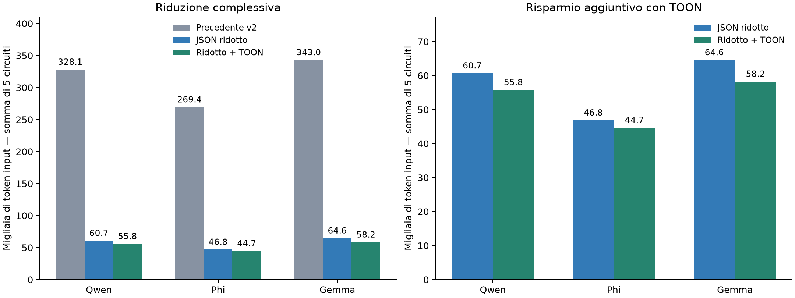

19 settembre 2026 · Cinque circuiti train · Token input misurati, nessuna nuova inferenza.
Documento completo: metodo, limiti e comandi
| Modello | Precedente v2 | JSON ridotto | Ridotto + TOON | Risparmio aggiuntivo | Riduzione rispetto a v2 |
|---|---|---|---|---|---|
| Qwen | 328.123 | 60.687 | 55.762 | 8,12% | 83,01% |
| Phi | 269.360 | 46.844 | 44.670 | 4,64% | 83,42% |
| Gemma | 343.014 | 64.578 | 58.249 | 9,80% | 83,02% |

Precedente v2: ricostruzione del formato storico. JSON ridotto: richieste archiviate, token verificati esattamente. TOON: richieste preparate, non inviate.
.venv/bin/python -m llm_selection.controller --technical --model qwen --label "qwen-toon-01" --precision Q8_0 --context 147456
.venv/bin/python -m llm_selection.controller --technical --model phi --label "phi-toon-01" --precision Q8_0 --context 30000
.venv/bin/python -m llm_selection.controller --technical --model gemma --label "gemma-toon-01" --precision Q8_0 --context 30000